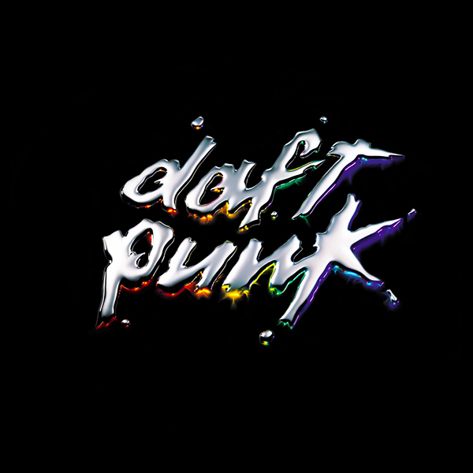

Discovery
12th of March, 2001
The second album from the French duo marked a new beginning, not just for Daft Punk, but for electronic music as a whole. Its groundbreaking approach to blending disco, house, and funk, along with masterfully manipulated samples, created an entirely new sound.
Drawing inspiration from their childhood, the album's unique aesthetic and overall concept aimed to capture a playful and vibrant tone, reminiscent of childlike innocence and wonder.
Discovery served as a transformative release, propelling Daft Punk to even greater heights. It built upon the success of their debut album, showcasing their ability to consistently captivate listeners with infectious melodies worldwide.
Personal Favourite Tracks
- Aerodynamic
- Digital Love
- Veridis Quo
- Crescendolls


"Our work is never over"